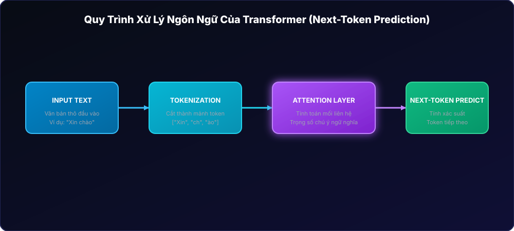
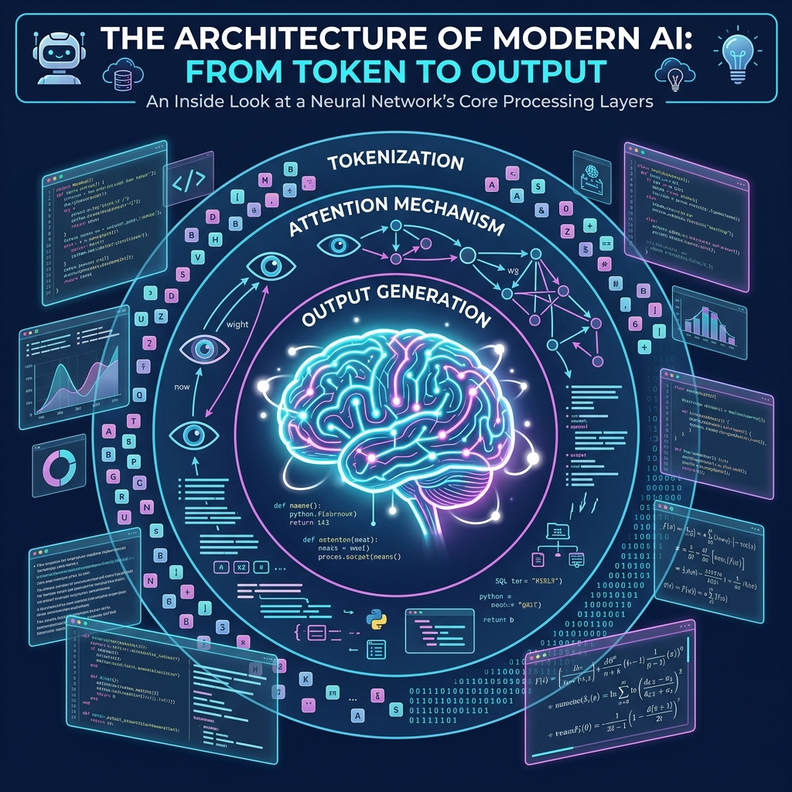
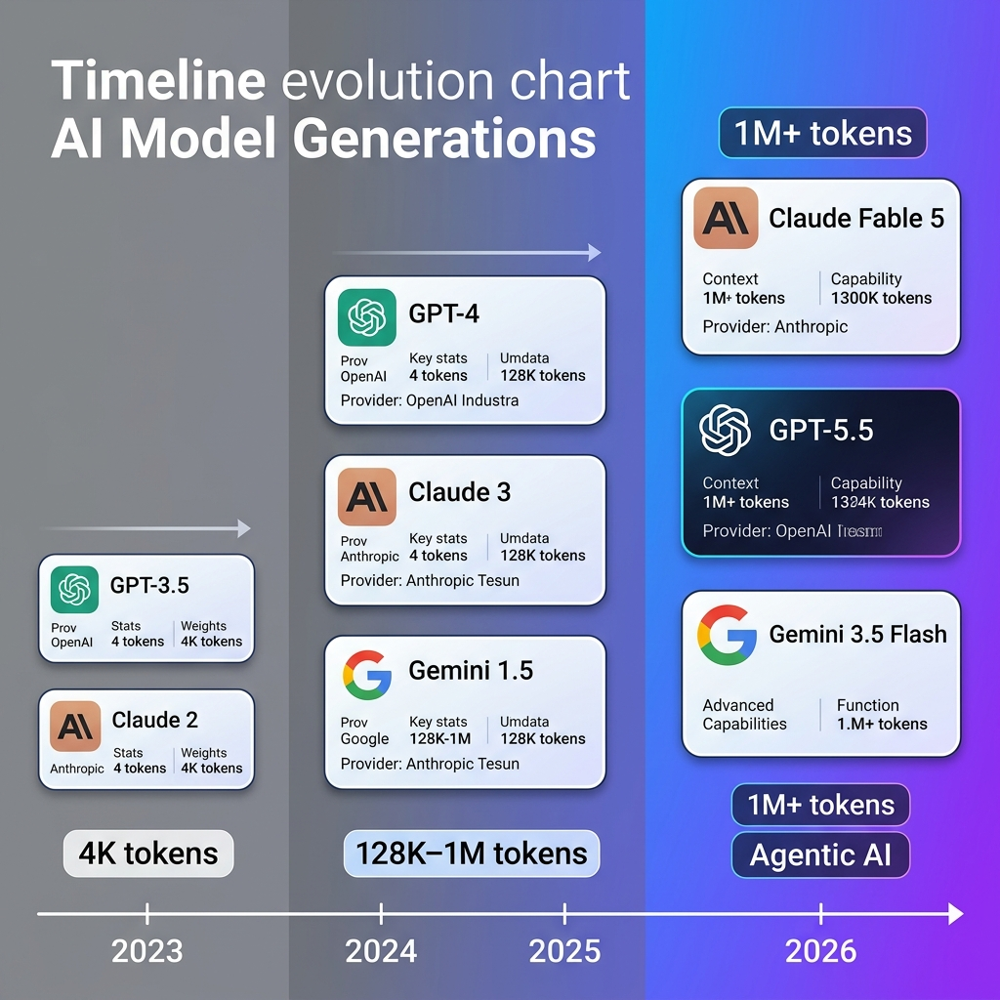
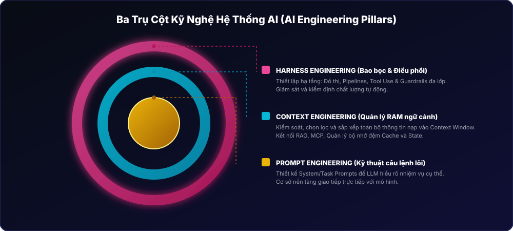
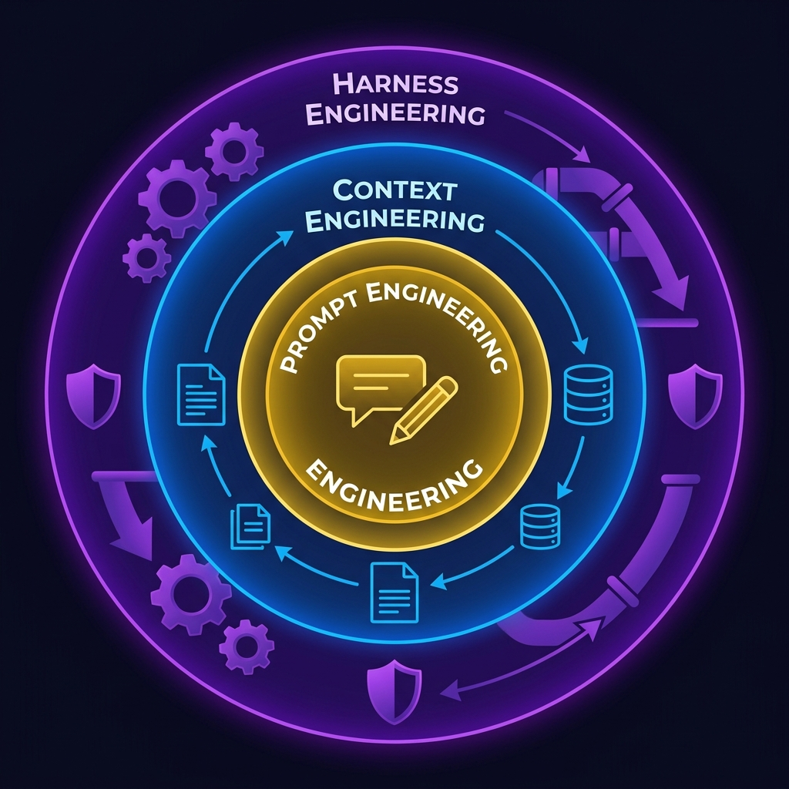
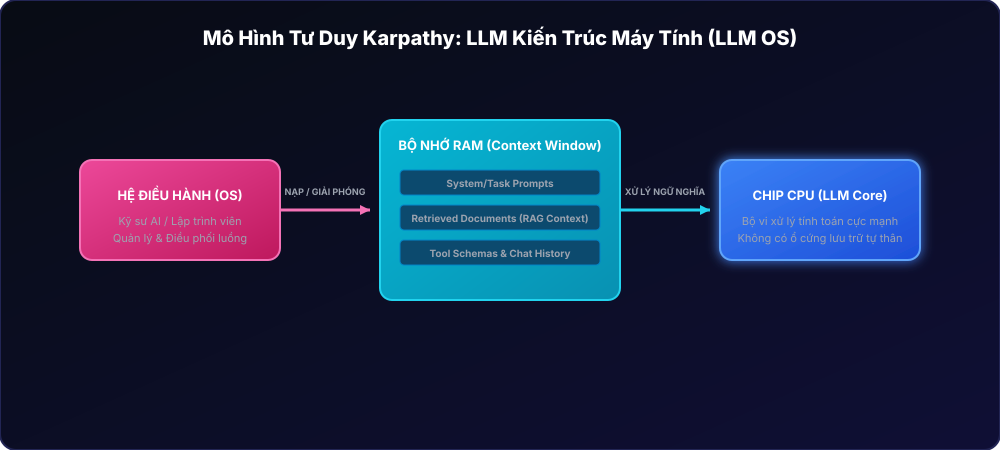
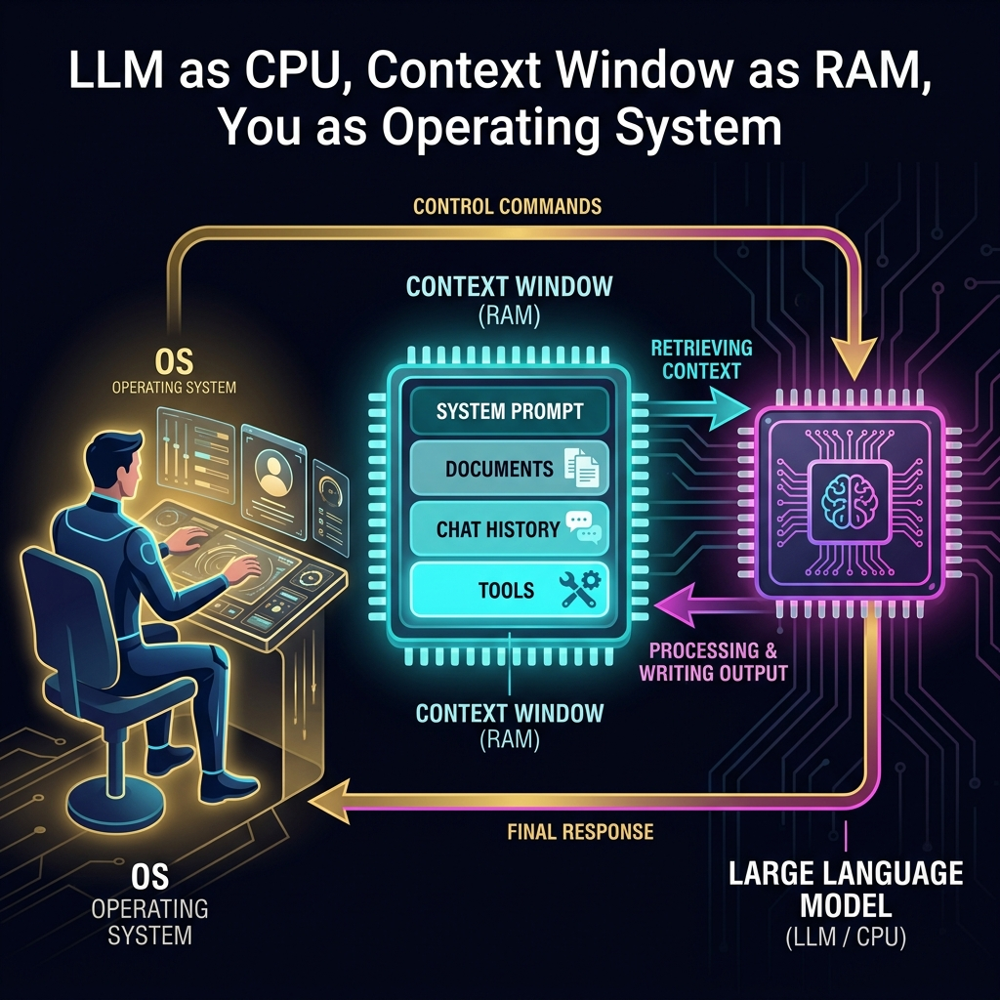
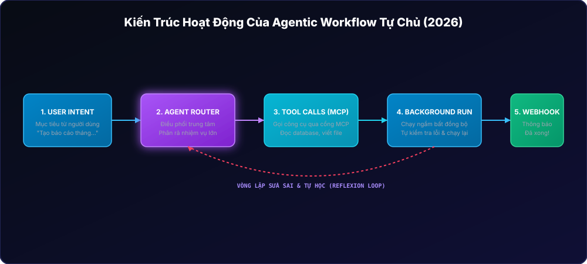
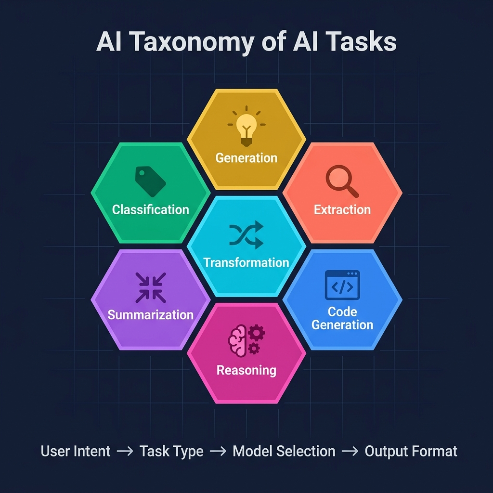
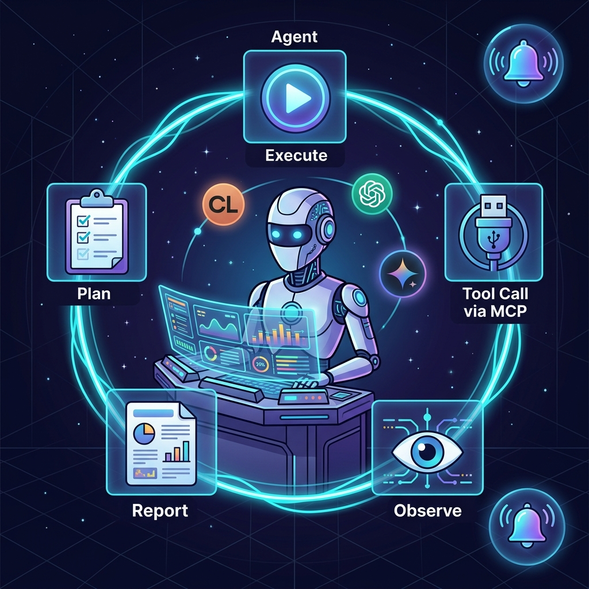

Session 01 — Nền tảng & Bối cảnh AI 2026
Cơ chế vận hành của Transformer
Large Language Models (LLMs) hoạt động dựa trên mạng nơ-ron Transformer. Bản chất của quá trình này gồm 3 bước chính:
- Tokenization (Mã hóa): Chuyển đổi văn bản tự nhiên thành các chuỗi số (Token). Mỗi model có một bảng từ vựng (Vocabulary) riêng và cách cắt token khác nhau. Ví dụ cụm từ
"Xin chào"có thể tách thành["X", "in", " ch", "ào"]. - Attention Mechanism (Cơ chế chú ý): Giúp mô hình tính toán mối liên hệ ngữ nghĩa giữa các từ trong câu, biết được từ nào cần "chú ý" nhiều hơn khi xử lý.
- Next-Token Prediction (Dự đoán token tiếp theo): Bản chất LLM là một máy tính toán xác suất. Nó không thực sự "hiểu" theo cách của con người mà liên tục dự đoán token tiếp theo có khả năng xuất hiện cao nhất dựa trên ngữ cảnh trước đó.
Các tham số cấu hình cốt lõi:
- Temperature (Nhiệt độ): Dao động từ
0đến2. Cấu hình bằng0giúp câu trả lời nhất quán và chính xác (Deterministic);1hoặc cao hơn tạo ra câu trả lời sáng tạo, ngẫu nhiên hơn. - Top-p (Nucleus Sampling): Giới hạn việc chọn lọc token trong nhóm có tổng xác suất tích lũy bằng
p(ví dụ:top-p = 0.9sẽ chỉ chọn các token nằm trong 90% xác suất cao nhất).
Context Window là dung lượng bộ nhớ làm việc tạm thời của AI. Năm 2026, kích thước bộ nhớ 1,000,000+ tokens trở thành tiêu chuẩn trên các dòng Flash (Gemini 3.5 Flash) giúp xử lý toàn bộ sách, video dài hoặc toàn bộ codebase trong một lần chat mà không lo AI bị "mất trí nhớ".
Bảng So Sánh Frontier Models (Cập nhật 06/2026)
| Provider | Model | Reasoning | Coding | Speed | Cost | Context Window |
|---|---|---|---|---|---|---|
| Anthropic | Claude Fable 5 | ⭐⭐⭐⭐⭐ | ⭐⭐⭐⭐⭐ | ⭐⭐⭐☆☆ | $$ | 200K+ |
| OpenAI | GPT-5.5 | ⭐⭐⭐⭐⭐ | ⭐⭐⭐⭐☆ | ⭐⭐⭐⭐☆ | $$$ | 128K+ |
| Gemini 3.5 Flash | ⭐⭐⭐⭐☆ | ⭐⭐⭐⭐⭐ | ⭐⭐⭐⭐⭐ | $ | 1M+ |



Thực hành: Đánh giá & So sánh
Hãy sử dụng cùng một câu hỏi kiểm tra logic để đánh giá độ chính xác và tốc độ phản hồi trên các mô hình: Claude Fable 5, GPT-5.5 và Gemini 3.5 Flash.
Giải bài toán sau và giải thích chi tiết từng bước:
Một nhà máy có 3 dây chuyền sản xuất. Dây chuyền A sản xuất 40% sản phẩm với tỷ lệ lỗi 2%. Dây chuyền B sản xuất 35% sản phẩm với tỷ lệ lỗi 3%. Dây chuyền C sản xuất 25% sản phẩm với tỷ lệ lỗi 5%.
Nếu chọn ngẫu nhiên 1 sản phẩm bị lỗi, xác suất nó đến từ dây chuyền B là bao nhiêu?📝 Bài tập Lesson 1.1
- Phân tích so sánh: Viết một bài luận ngắn (300-500 từ) giải thích nguyên nhân cùng một prompt nhưng các mô hình lại đưa ra kết quả và cách lập luận khác nhau. Trích dẫn số liệu từ bảng so sánh mô hình 2026.
- Lập ma trận Task: Tạo bảng so sánh hiệu quả thực tế của 3 mô hình trên cho 3 nhóm công việc: Lập trình (Coding), Phân tích số liệu (Analysis), và Viết lách sáng tạo (Creative writing).
NotebookLM Audio Overview Prompt
Copy đoạn prompt bên dưới nạp vào Gamma.app hoặc ChatGPT để phác thảo Slide thuyết trình cho Lesson 1.1:
"Hãy tạo mã nguồn Markdown theo chuẩn Marp để trình bày nội dung Slide cho Lesson 1.1: 'LLM hoạt động như thế nào và sự tiến hóa của Context Window trong năm 2026'. Sử dụng cấu trúc tối giản, phân chia màu sắc tương phản cao, Dark mode."
Định nghĩa 3 Trụ Cột Kỹ Nghệ Hệ Thống AI
- Prompt Engineering (Kỹ thuật câu lệnh): Thiết kế các câu lệnh đầu vào tối ưu để mô hình hiểu đúng nhiệm vụ. Đây là tầng cốt lõi nhất (nhân).
- Context Engineering (Kỹ thuật ngữ cảnh): Quản lý, chọn lọc và sắp xếp toàn bộ thông tin được nạp vào Context Window (bao gồm tài liệu hướng dẫn, lịch sử chat, định nghĩa công cụ - tool schemas).
- Harness Engineering (Kỹ thuật bao bọc/điều phối): Thiết kế hạ tầng phần mềm xung quanh LLM. Bao gồm việc xây dựng pipeline, thiết lập các chốt chặn an toàn (guardrails), và cơ chế gọi hàm tự động (tool use/function calling).
Vào giữa năm 2025, Andrej Karpathy đưa ra nhận định: "Prompt Engineering giờ chỉ là kỹ năng cơ bản (table stakes). Context Engineering mới là thứ tạo ra sự khác biệt lớn nhất cho các hệ thống Agentic AI. Lỗi của các AI Agents 80% đến từ việc nạp sai/thiếu ngữ cảnh (Context Failures) chứ không phải do viết prompt không hay."
Bảng So Sánh Tư Duy Phát Triển AI
| Đặc tính | Cận 2023 - 2024 (Tư duy cũ) | Từ 2025 - 2026 (Tư duy mới) |
|---|---|---|
| Trọng tâm | Tìm kiếm câu chữ "thần kỳ", định hình Persona. | Quản lý kiến trúc luồng dữ liệu, lọc nhiễu ngữ cảnh. |
| Kiểm thử | Đọc thử thủ công vài lần bằng mắt (Vibe-check). | Đánh giá tự động định lượng trên các tập dữ liệu chuẩn (Golden Datasets). |
| Bảo mật | Viết prompt dặn dò AI "không được tiết lộ hệ thống". | Chốt chặn an toàn đa tầng (System-level Guardrails) + Giám sát con người. |


📝 Bài tập Lesson 1.2
- Thiết kế sơ đồ tư duy (Mindmap): Vẽ một sơ đồ phân tích chi tiết mối quan hệ giữa 3 khái niệm: Prompt - Context - Harness. Đưa ra ví dụ thực tế tương ứng với các công cụ phát triển AI của năm 2026 (như MCP, LangGraph, CrewAI).
- Phân tích lỗi Context: Tìm hiểu và viết một bài báo cáo (400-600 từ) về chủ đề "Các lỗi hệ thống AI Agent do thất bại trong quản lý Context". Đưa ra ít nhất 3 kịch bản thực tế (ví dụ: Agent gọi sai công cụ, Agent bị loãng thông tin do nhồi nhét quá nhiều tài liệu không liên quan).
NotebookLM Audio Overview Prompt
Sử dụng prompt dưới đây để chuẩn bị bài viết/slide giảng dạy về sự dịch chuyển công nghệ:
"Hãy tạo nội dung chi tiết dạng Bullet Points cho các slide thuyết trình về 'Sự chuyển dịch từ Prompt sang Context Engineering & Mô hình tư duy Karpathy' sử dụng kịch bản slide gồm Tiêu đề, Nội dung hiển thị dạng bullet-points (tối đa 4 ý/slide), và Ghi chú dành cho giảng viên."
Khung tư duy Karpathy (LLM = CPU, Context = RAM)
Để không bị nhầm lẫn về khả năng của AI, chúng ta cần ánh xạ các thành phần của hệ thống AI sang kiến trúc máy tính truyền thống:
- LLM đóng vai trò là CPU: Nó là bộ vi xử lý cực mạnh, có khả năng tính toán ngữ nghĩa rất nhanh, nhưng nó không có bộ nhớ lưu trữ chủ động. Khi nhận đầu vào, nó xử lý và trả ra kết quả đầu ra rồi ngay lập tức giải phóng bộ nhớ.
- Context Window đóng vai trò là RAM: Đây là bộ nhớ truy xuất ngẫu nhiên tạm thời. Toàn bộ thông tin cần thiết để CPU xử lý (System Prompt, tài liệu, lịch sử chat, các API schema) phải được nạp vào đây. Nếu thông tin không nằm trên RAM, CPU (LLM) hoàn toàn không biết đến sự tồn tại của nó.
- Kỹ sư AI đóng vai trò là OS (Hệ điều hành): Nhiệm vụ của bạn là quản lý RAM. Bạn phải quyết định nạp cái gì vào RAM, giải phóng RAM khi đầy, và lên lịch trình (Schedule) cho các tác vụ của CPU.
Khái niệm Steerability (Khả năng điều hướng)
Steerability là độ nhạy và khả năng tuân thủ định hướng của mô hình trước các chỉ dẫn cụ thể trong prompt. Prompt càng rõ ràng, các ràng buộc đầu ra càng chặt chẽ thì mức độ Steerability càng cao, giảm thiểu tối đa các câu trả lời lan man.
Với các mô hình suy luận chuyên sâu (Reasoning Models) như GPT-5 Pro và Gemini 3.5 Pro, câu lệnh "Let's think step by step" có thể không còn hiệu quả hoặc gây phản tác dụng. Các mô hình này đã tự động chạy luồng suy luận ngầm trước khi trả lời. Nếu ép hiển thị suy luận ở đầu ra, nó sẽ thực hiện hai lần suy luận, gây lãng phí token và thời gian phản hồi (Latency).


Thực hành: Test độ nhạy và Đo Latency
1. Chuẩn bị 1 bài toán phức tạp và gửi cho GPT-5.5 và GPT-5 Pro.
2. Với mỗi model, chạy 2 lần: Lần 1 dùng prompt thông thường; Lần 2 dùng prompt có thêm yêu cầu "Let's think step by step".
3. Ghi lại: Kết quả có chính xác hơn không? Thời gian phản hồi chênh lệch bao nhiêu giây?
📝 Bài tập Lesson 1.3
-
Viết lại Prompt: Thực hiện chuyển đổi 5 câu lệnh mơ hồ sau đây thành các câu lệnh có độ Steerability cao (thiết lập rõ vai trò, nhiệm vụ, định dạng đầu ra, và các ràng buộc cụ thể):
- a) "Tóm tắt bài viết này."
- b) "Tìm lỗi sai trong đoạn code C++ này."
- c) "Hãy viết một bài đăng quảng cáo cho sản phẩm cà phê mới."
- Thiết lập Decision Matrix: Viết một hướng dẫn ngắn (khoảng 300 từ) kèm bảng tiêu chí quyết định (Decision Matrix): Khi nào dự án của bạn nên chọn Standard Model và khi nào bắt buộc phải nâng cấp lên Reasoning Model.
NotebookLM Audio Overview Prompt
Nhập prompt này vào NotebookLM để định hướng cho buổi thảo luận Podcast đối thoại giữa 2 MC ảo:
"Hãy tạo một buổi thảo luận Podcast giữa hai người dẫn chương trình (một nam, một nữ) bàn về nội dung của Session 01. Tập trung sâu vào mô hình tư duy của Andrej Karpathy: LLM là CPU, Context là RAM, và Kỹ sư đóng vai trò OS."
Taxonomy của AI Tasks
Các yêu cầu làm việc với AI trong thực tế luôn nằm trong 7 nhóm tác vụ cơ bản sau:
- Generation (Tạo nội dung): Viết bài viết, soạn email, viết kịch bản.
- Classification (Phân loại): Xác định sắc thái bình luận (Tích cực/Tiêu cực), lọc spam.
- Extraction (Trích xuất): Lấy thông tin từ CV, hóa đơn, bài báo.
- Transformation (Chuyển đổi): Dịch thuật, định dạng lại dữ liệu từ XML sang JSON.
- Summarization (Tóm tắt): Rút gọn văn bản dài, tóm tắt biên bản họp.
- Reasoning (Suy luận): Giải toán, gỡ lỗi logic thuật toán khó.
- Code Generation (Viết mã nguồn): Tạo hàm, class hoặc toàn bộ cấu trúc dự án.
Năm 2026 đánh dấu bước chuyển mình từ việc con người tương tác thủ công với Chatbot sang việc triển khai các AI Agents tự chủ chạy ngầm (Background Agents). AI Agent nhận mục tiêu lớn → Tự phân rã thành nhiệm vụ nhỏ → Tự chọn và gọi các công cụ (Tools) cần thiết thông qua Model Context Protocol (MCP) - giao thức mở giúp kết nối bất kỳ AI Model nào với các tài nguyên dữ liệu cục bộ hoặc cloud một cách bảo mật và tức thời.
Hướng dẫn chọn mô hình tối ưu theo nhóm Task (06/2026)
| Nhóm Tác Vụ | Mô Hình Khuyên Dùng | Lý Do Lựa Chọn |
|---|---|---|
| Chat thường ngày / Biên soạn tài liệu | GPT-5.5 | Khả năng tổng hợp thông tin cân biến nhất, giọng văn tự nhiên. |
| Phát triển phần mềm / Sửa code | Claude Fable 5 | Độ tin cậy về cú pháp và logic cấu trúc code tốt nhất hiện tại. |
| Xử lý tài liệu siêu dài / Phân tích log | Gemini 3.5 Flash | Context Window 1M+ tokens vượt trội, xử lý dữ liệu lớn giá cực rẻ. |
| Hệ thống Agent tự chủ gọi Tool | Claude Opus 4.8 | Khả năng tuân thủ định dạng Schema đầu ra chuẩn xác nhất, ít lỗi gọi API. |



📝 Bài tập Lesson 1.4
- Thiết kế luồng Agentic: Hãy tự lên kế hoạch thiết kế một AI Agent tự động hóa việc: "Đọc email khách hàng -> Phân loại cảm xúc -> Tra cứu thông tin trên database nội bộ -> Tự động soạn email trả lời phù hợp". Mô tả rõ Agent này cần những công cụ (Tools) nào và bạn sẽ kết nối chúng qua MCP ra sao.
- Bảng ánh xạ dự án: Lập bảng ánh xạ (Mapping) cho 10 công việc thực tế tại cơ quan/trường học của bạn sang 7 nhóm tác vụ AI cốt lõi, chọn model tương ứng và lý do lựa chọn.
NotebookLM Video/Tiktok Prompt
Nhập prompt này vào NotebookLM để trích xuất ra nội dung kịch bản cho video ngắn 60 giây:
"Dựa trên tài liệu Session 01, hãy viết một kịch bản chi tiết cho một Video ngắn (thời lượng 60 giây) đăng tải trên TikTok giới thiệu bài học. Bắt đầu bằng hook giật gân, phân cảnh visual, voiceover và hiệu ứng chữ."